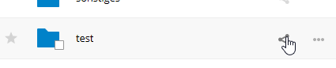

Πραγματοποίηση ανώνυμων μεταφορτώσεων
Μπορείτε να δημιουργήσετε τους δικούς σας ειδικούς καταλόγους μεταφόρτωσης, έτσι ώστε άλλα άτομα να μπορούν να ανεβάζουν αρχεία σε εσάς χωρίς να χρειάζεται να συνδεθείτε στον διακομιστή και χωρίς να είστε χρήστης του Nextcloud. Δεν θα επιτρέπεται να βλέπουν τα περιεχόμενα αυτού του καταλόγου ή να κάνουν αλλαγές. Αυτή είναι μια εξαιρετική εναλλακτική λύση για την αποστολή μεγάλων συνημμένων μέσω email, χρησιμοποιώντας διακομιστή FTP ή χρήση εμπορικών υπηρεσιών κοινής χρήσης αρχείων.
Ρύθμιση της δικής σας πτώσης αρχείων
Go to Files and create or choose the folder, the anonymous upload should be made to:
Check Share Link, Allow editing, Hide file listing:

Τώρα μπορείτε να στείλετε το σύνδεσμο στο φάκελο αποστολής χειροκίνητα ή χρησιμοποιώντας τη λειτουργία αποστολής Nextcloud, εάν ο διαχειριστής σας το έχει ενεργοποιήσει.
Μεταφόρτωση αρχείων
Using the anonymous upload function is simple. You receive a link to the upload folder, click the link, and then you’ll see a Nextcloud page with a «Click to upload» button:

Αυτό ανοίγει ένα εργαλείο επιλογής αρχείων και επιλέγετε το αρχείο ή τον κατάλογο που θέλετε να ανεβάσετε. Μπορείτε επίσης να ρίξετε αρχεία στο παράθυρο.
Όταν ολοκληρωθεί η μεταφόρτωση, εμφανίζονται τα ονόματα αρχείων: